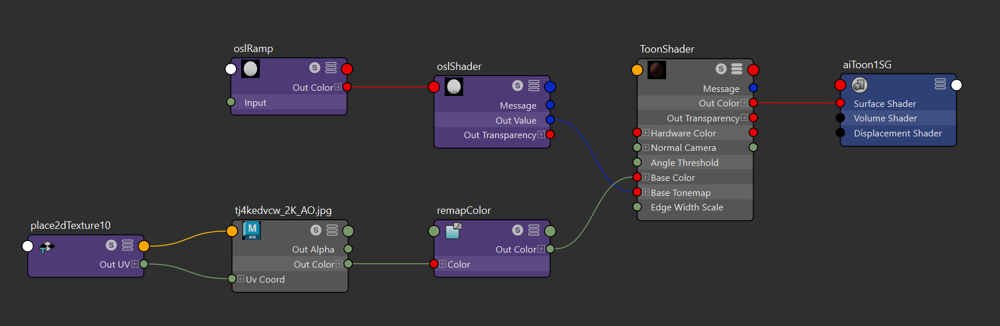
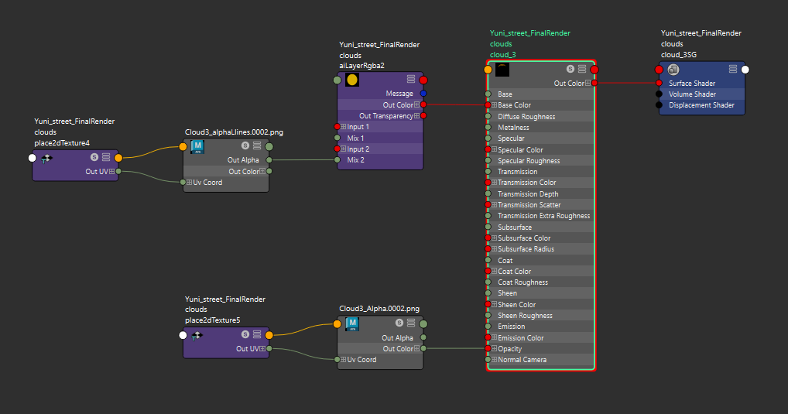
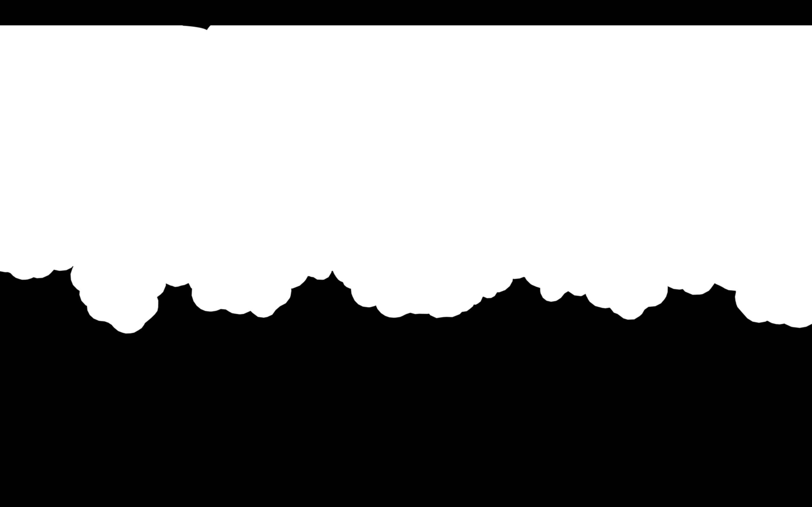
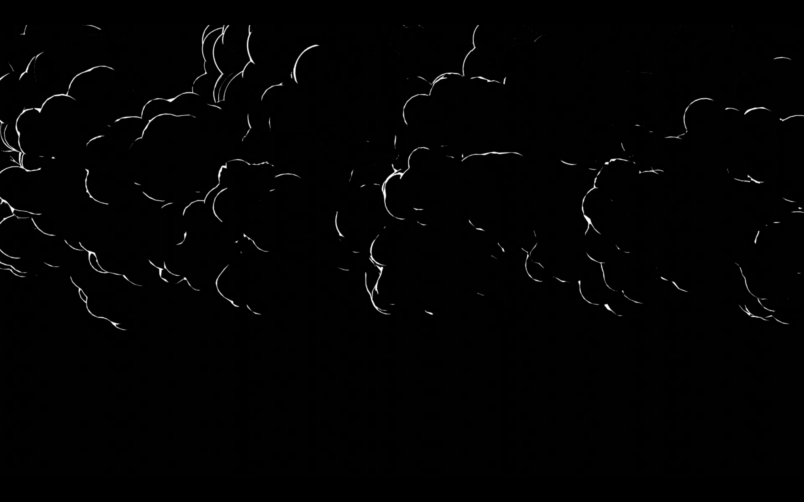

Cartoon City Project
This project was a group projects to build a street of city referencing the style of specific illustrator. Our group chose 'Kilian Eng', whose art style is more 2D-like, flat, and detailed with line art. Using Arnold toon shader, we accomplished to follow the artist's style.
Workflow Details

We used Alnord shader with osl Shader scripts together to make a toon shading effects and contour.



We connected 2 different image sequences to describe 2D toon-like cloud as alpha map.
Final Render